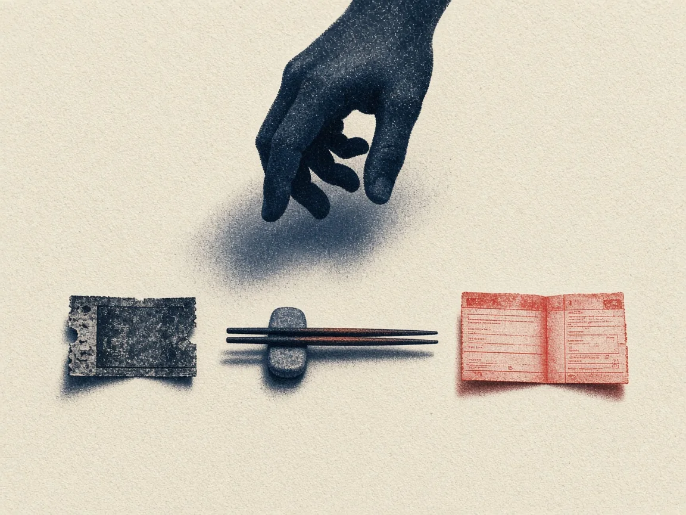
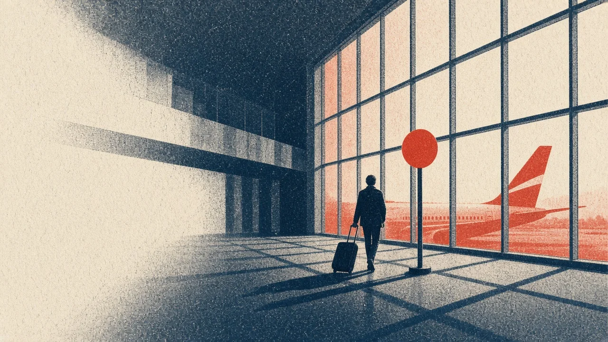
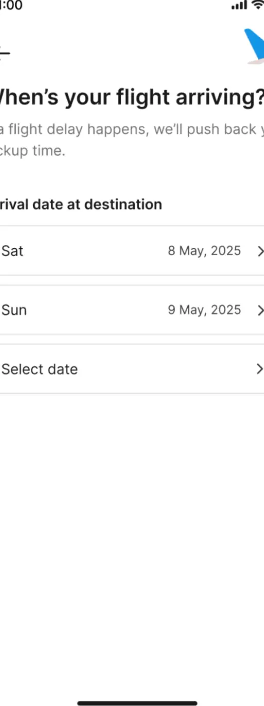
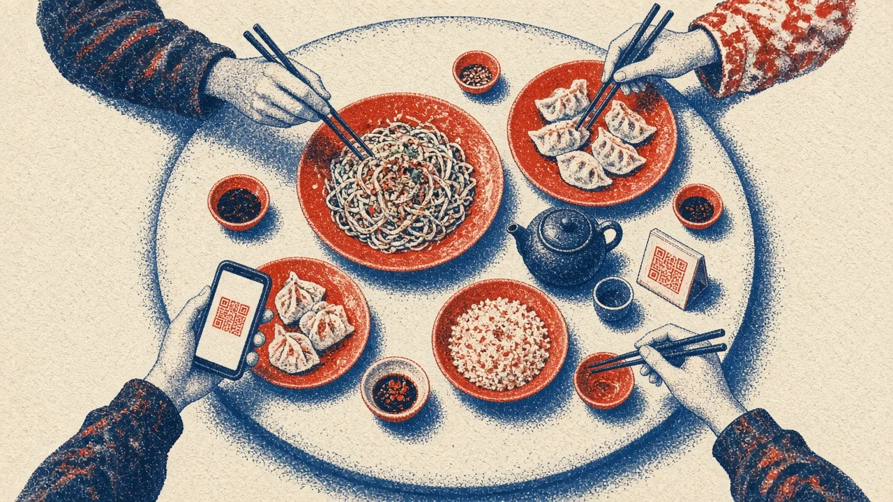
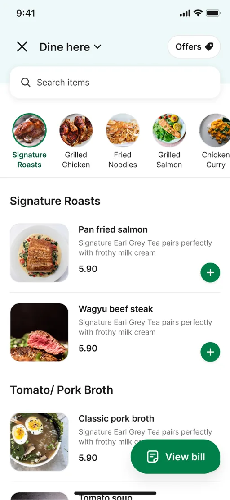
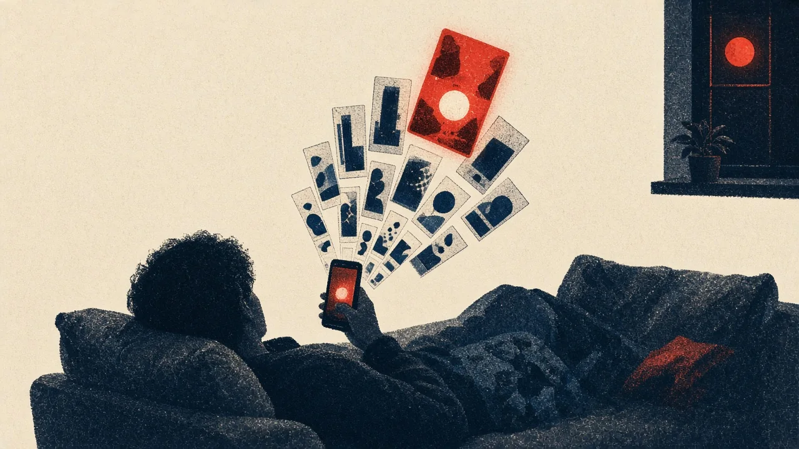

Lead product designer · Grab · Singapore
I design the few seconds before someone decides.
What to watch tonight. What the table orders. When to walk out to the car. I'm Reuben, and at Grab and Disney+ Hotstar I've spent the last few years on those small moments — and on the numbers that move when they get easier.

Selected case studies
Three of five · 2020 — 2025
-
No. 01
Grab · Transport · 2025
Airport pickups that move with your flight
Reserved airport rides were failing because flights don't land on schedule. We tied bookings to live flight data and walked travellers from the gate to the car door.
- Booked rides
- +39%
- Passenger no-shows
- −4.5pp


Arrivals, Terminal 1. Hover for the product. -
No. 02
Grab · Dine-in · 2025
A QR menu the whole table can order from
Grab's first scan-to-order lost over half its diners at a login wall. Version two was rebuilt around how tables actually order: one shared basket, menus that look like the restaurant, and orders that reach the kitchen's POS.
- Time to order
- −33%
- Order completion
- 89%


Table for four. Hover for the product. -
No. 03
Disney+ Hotstar · Discovery · 2020
Making it cheap to be curious
A third of daily visitors left without watching anything. The fix wasn't more content; it was making each title cheaper to look at. Browse Sheet became the platform's content-details page.
- Distinct titles viewed
- +35%
- Watchlist adds
- +16%


Friday, 11:40 pm. Hover for the product.
More work
Shorter reads
- 2021Subscriber-only TV Disney+ Hotstar+35% paid conversions
- 2021A helpdesk for 300M people Disney+ Hotstar−36% lost-account tickets
- 2020Barter, campus lending ConceptTwo-week sprint
- 2019Innovision identity Festival, 10k peopleLed 4 designers
- 2018International MUN identity ConferenceSolo
Things the work taught me
Working principles
-
Make curiosity cheap.
People who watched something had looked at 5.1 titles; people who left had looked at 1.5. Lowering the cost of a single look did more than any new row of content.
Learned on Browse Sheet → -
Design for the immigration queue.
An automatic "they're nearly out" trigger looked perfect in the file. In a real airport it would have sent drivers to the kerb while passengers were still at passport control.
Learned on Airport Transfers → -
Leave the familiar parts alone.
Millions of people already know how to pick a car and a drop-off on Grab. New services earn trust by changing only the part that's new.
Learned on Airport Transfers → -
There are two sides to every table.
Our first menus were built for diners and read as generic to merchants, who rejected them. A marketplace only works when the design pays both sides.
Learned on Scan to Order →
Contact